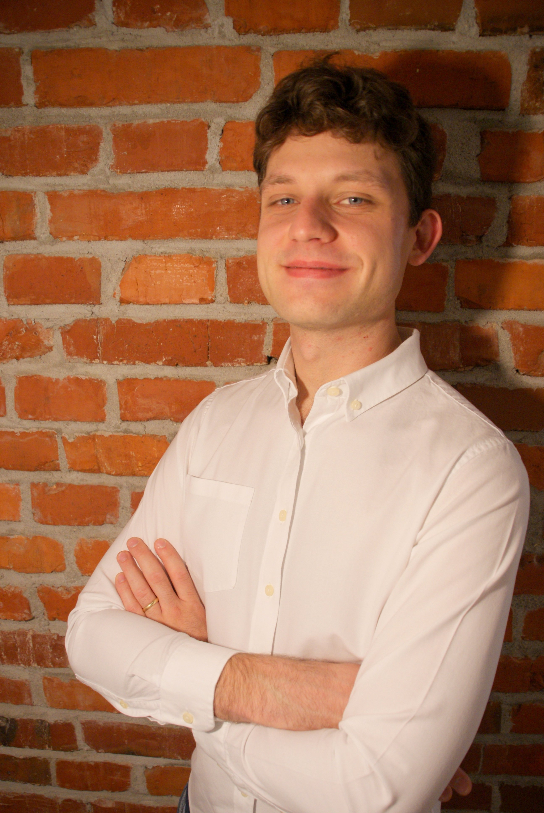

Hi, I'm Rafał.
I'm a Lead AI Engineer at Daydream/Livepeer and the lead developer on Scope — a real-time engine for interactive audio/video AI generation that runs pipelines like video diffusion, LTX-2, and ACEStep.
I take projects from 0 to 1 — shaping research-stage ideas into solid, scalable systems. I have prior experience at Google, CERN, and Hazelcast. I enjoy sharing what I learn — I've spoken at over 70 tech conferences (including KubeCon twice), write blog posts, and authored a book.
On a more personal note, I love running ultramarathons and mountaineering.
leszko rafal-leszko @RafalLeszko rafał-leszko